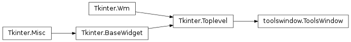

Tools Window¶

-
class
ToolsWindow(canvas, parent, root)[source]¶ Other main portion of the program, the tools window is in charge of managing all tool and manipulation related buttons , and is created bound to root but is technically a standalone window.
Parameters: - parent – the class that has this instance of ToolsWindow
- root – the root of the program
Create tool bar buttons